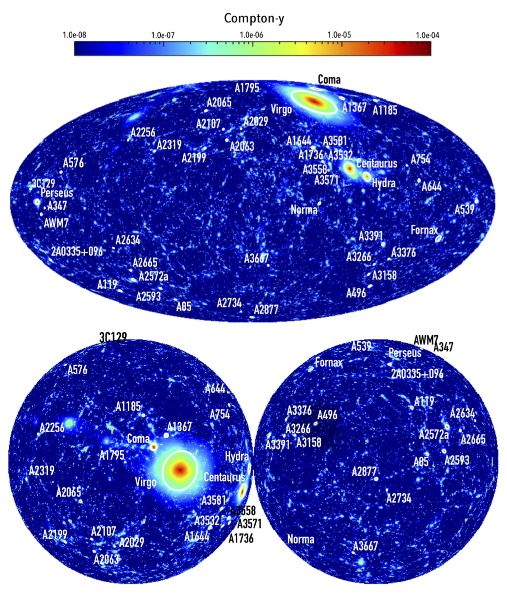

Simulating the LOcal Web (SLOW)
SLOW is a set of cosmological hydrodynamical simulations of 750 Mpc3, featuring the most extensive collection of Local Universe galaxy clusters ever replicated, accurately set within the appropriate large-scale framework.
These simulations enable predictions about how individual cosmic structures formed and evolved, allowing direct comparison with observational data.
For details, see the paper: arXiv:2402.01834
